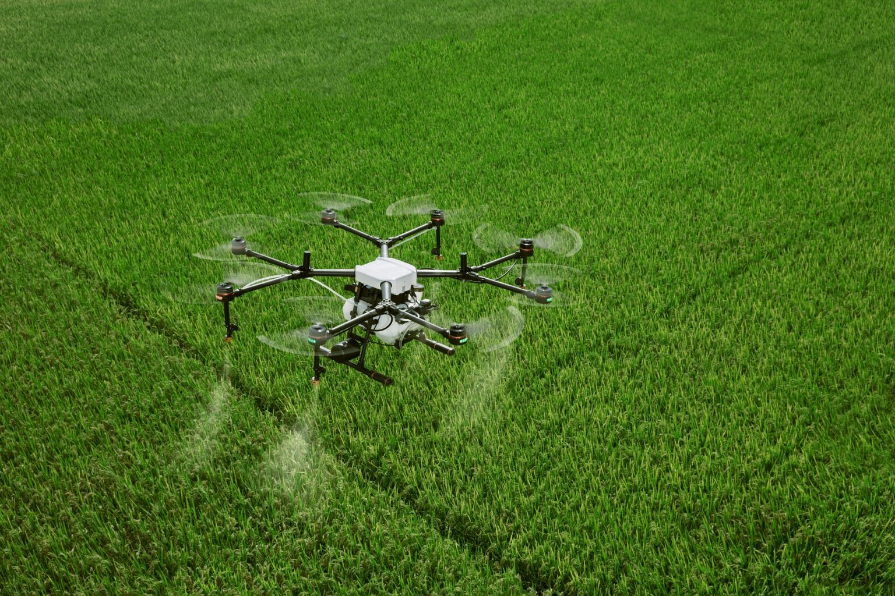
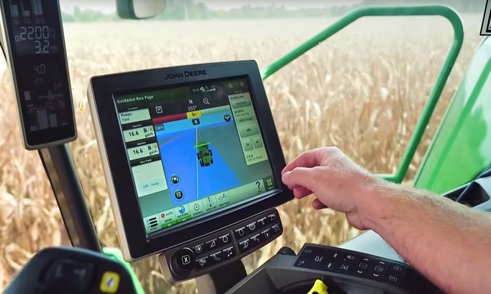

Sobre a Tecnológia no campo
A tecnologia está revolucionando a agricultura, tornando-a mais eficiente e sustentável. Tratores autônomos e drones facilitam o plantio e a colheita, enquanto sensores monitoram o solo e as culturas com precisão. Sistemas de inteligência artificial ajudam a analisar dados climáticos e tomar decisões informadas, otimizando o uso de água e fertilizantes. Essas inovações aumentam a produtividade e promovem práticas agrícolas mais sustentáveis, ajudando a atender a crescente demanda por alimentos.
Tecnológia nas Industrías Agrícolas
A tecnologia está revolucionando as indústrias agrícolas, trazendo melhorias significativas em eficiência e sustentabilidade. Equipamentos avançados, estão facilitando o monitoramento e a gestão das culturas com precisão. Sensores e sistemas de irrigação inteligente otimizam o uso de recursos, enquanto a inteligência artificial e o machine learning ajudam a prever rendimentos e gerenciar pragas. Além disso, inovações em biotecnologia estão gerando cultivares mais resistentes e produtivos. Essas tecnologias não só aumentam a produtividade, mas também promovem práticas agrícolas mais sustentáveis e ajudam a atender a demanda crescente por alimentos em um mundo em constante mudança.
Novas Tecnologias no Campo
 